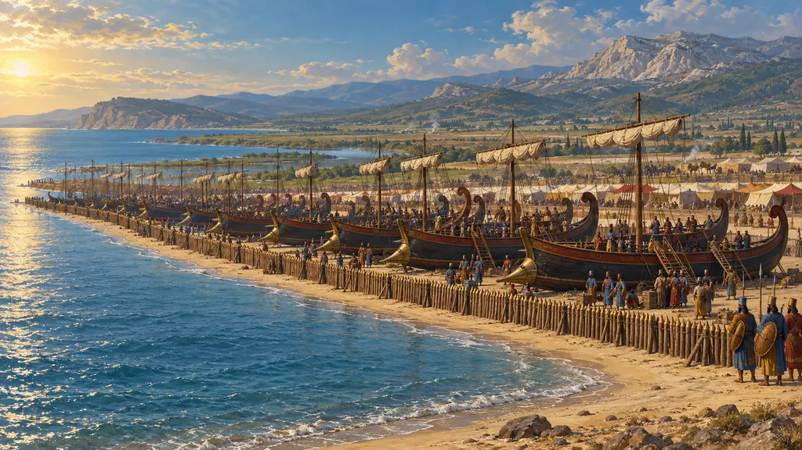
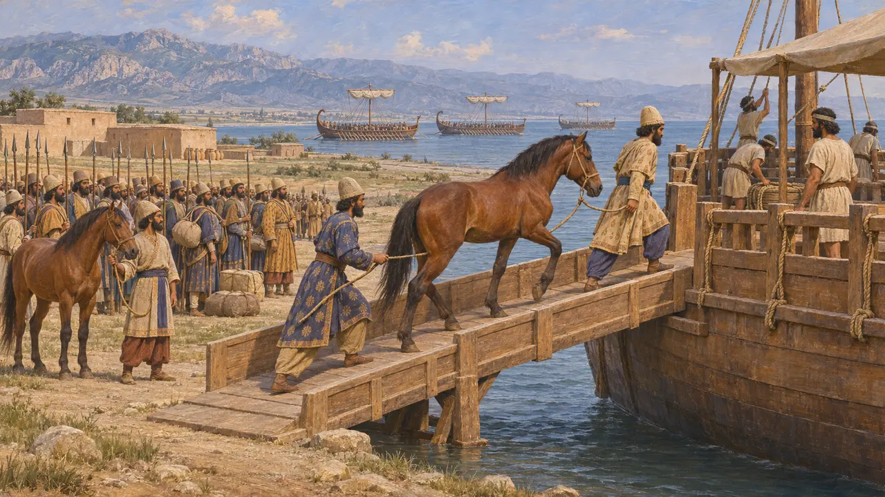
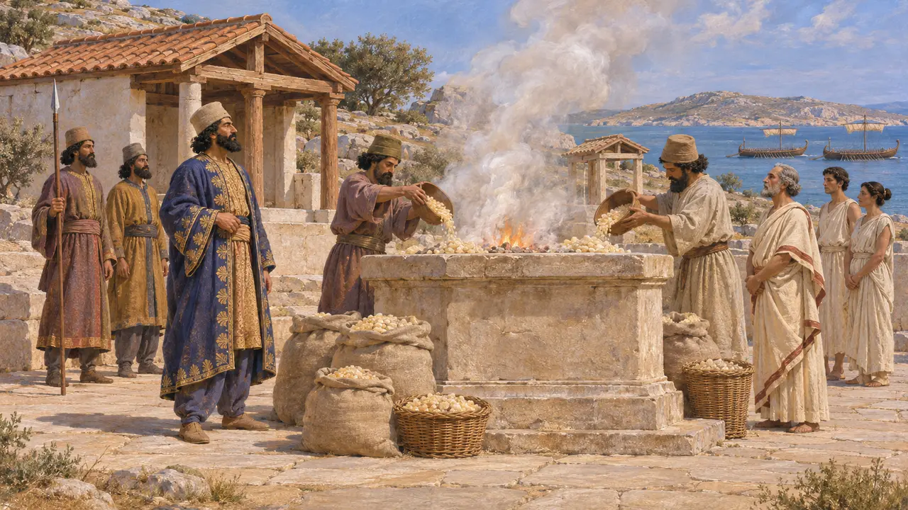
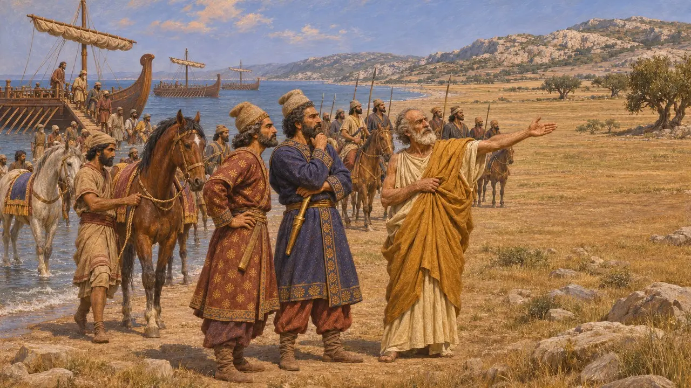
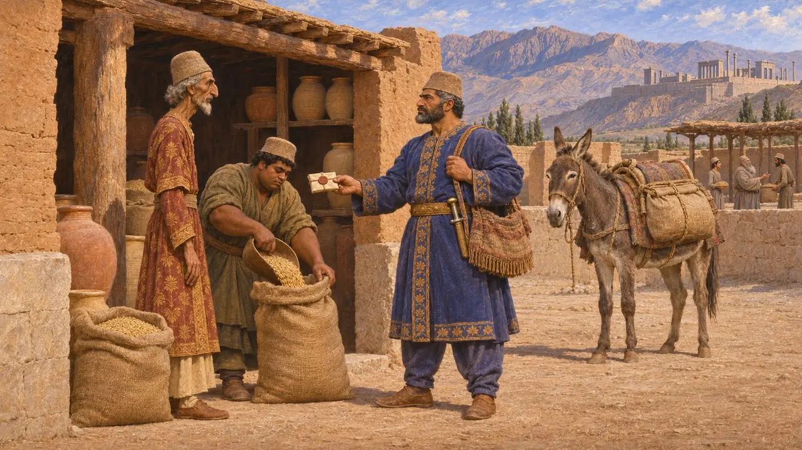
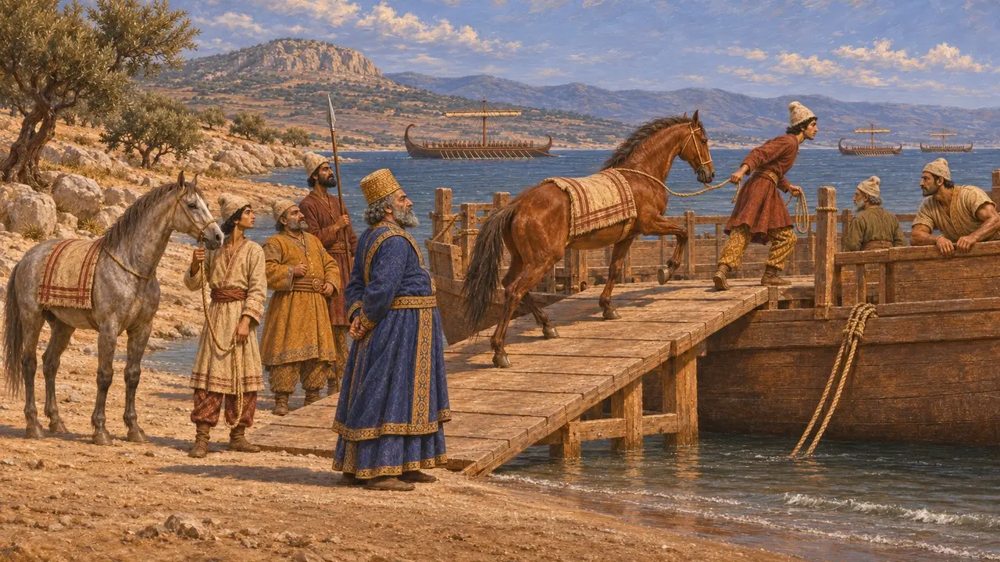

Encyclopedia › Battles and events

The expedition of Datis and Artaphernes
Darius's seaborne campaign against Eretria and Athens across the Aegean, 490 BCE
In the game: Level 8: The Bay of Marathon
In 490 Darius sent a fleet across the Aegean under Datis the Mede and Artaphernes, son of the satrap of Sardis, to punish Eretria and Athens for their part in the burning of Sardis. It brought the Cyclades under Persian control and destroyed Eretria, but its army was beaten by the Athenians and Plataeans at Marathon.
In the game: The game shows it as a campaign whose fleet carries cavalry in horse transports, spares Delos and lands at Marathon on Hippias's advice. These details follow Herodotus.

Ships for men and horses
Ancient accountHerodotus says Darius first sent heralds to the Greek cities to demand earth and water, and ordered his tribute-paying coastal cities to build warships and horse transports. Command passed from Mardonius to Datis and the younger Artaphernes, the King's nephew. The army gathered on the Aleian plain in Cilicia and embarked there. Fearing the waters off Athos, the fleet sailed from Samos straight through the islands.
Herodotus 6.48, 6.94-95

Through the islands to Eretria
Ancient accountHerodotus says the Naxians fled to the hills, and the Persians burned their town and temples. At Delos the islanders fled to Tenos; Datis anchored off Rhenaea, told them to return in peace and burned three hundred talents of frankincense on the altar. Carystus was besieged until it submitted. Eretria held out for six days before two citizens betrayed it, and its temples were burned in revenge for Sardis.
Herodotus 6.96-101

The landing at Marathon and the return
Ancient accountHerodotus says Hippias, the exiled tyrant of Athens, led the army to Marathon because it was the ground best suited to horsemen and closest to Eretria. After the defeat the fleet rounded Sunium towards Phaleron, found the Athenian army already back, and sailed for Asia. Darius settled the Eretrian captives at Ardericca in Cissia, not far from Susa.
Herodotus 6.102, 6.115-116, 6.119

Datiya in the Persian tablets
In the recordA Persepolis Fortification tablet from Darius's 28th year, about 494, records rations for the journey of a man named Datiya, who was travelling from Sardis to Persepolis with a sealed authorisation from the King. D. M. Lewis argued that he was the Datis of Herodotus. If so, Datis was already a trusted royal agent in the west during the Ionian Revolt. The identification is probable rather than certain.
D. M. Lewis, Datis the Mede, Journal of Hellenic Studies 100, 1980

Aims, size and the missing horsemen
DisputedHerodotus names revenge on Eretria and Athens and the submission of Greeks who had refused earth and water. Historians still debate whether Darius planned a punitive raid or the conquest of Attica under a restored Hippias. The figure of 600 triremes is probably conventional, and modern estimates of the army are far below later Greek claims. Herodotus never mentions cavalry in the battle, and it is argued whether the horses had been re-embarked.
Herodotus 6.94-95, 6.102-117; P. Krentz, The Battle of Marathon, 2010
Sources
- Herodotus, Histories 6.48, 6.94-120
- D. M. Lewis, Datis the Mede, Journal of Hellenic Studies 100, 1980
- P. Briant, From Cyrus to Alexander, 2002
- P. Krentz, The Battle of Marathon, 2010